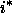
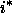

Images of galaxies are distinguished from images of stars by morphology. As
described above (§ 4.4.6), we separate stars from
galaxies using the difference between the PSF and model magnitude in  .
Galaxy target selection requires a difference greater than 0.3 mag. During
commissioning, we changed the magnitude limit of the sample several times
(Table 29), and experimented with a fuzzy limit, whereby the
probability that a galaxy be selected was a declining function of
.
Galaxy target selection requires a difference greater than 0.3 mag. During
commissioning, we changed the magnitude limit of the sample several times
(Table 29), and experimented with a fuzzy limit, whereby the
probability that a galaxy be selected was a declining function of  over a
range of 0.1 magnitudes. For the EDR, a sharp magnitude cut of
yields a
complete sample of galaxies, with a surface density of order 90 galaxies per
square degree (see the discussion in § 4.9).
over a
range of 0.1 magnitudes. For the EDR, a sharp magnitude cut of
yields a
complete sample of galaxies, with a surface density of order 90 galaxies per
square degree (see the discussion in § 4.9).
All magnitudes are corrected for extinction following
schlegel98. Objects with fiber magnitudes brighter than 15 in  or
or  , or brighter than 14.5 in  are rejected, to avoid problems with
fiber cross-talk in the spectrographs, for target v2.7, runs 94 and 125,
as indicated in Table 29.
We also reject objects with
SATUR set, which unfortunately rejects galaxies blended with
saturated stars. Finally, the more recent versions of target
reject objects with PetroR50 < 2'', brighter than (v2.7)
and 15.0 (v2.13.8), to cut down on contamination from very bright
stars.
, or brighter than 14.5 in  are rejected, to avoid problems with
fiber cross-talk in the spectrographs, for target v2.7, runs 94 and 125,
as indicated in Table 29.
We also reject objects with
SATUR set, which unfortunately rejects galaxies blended with
saturated stars. Finally, the more recent versions of target
reject objects with PetroR50 < 2'', brighter than (v2.7)
and 15.0 (v2.13.8), to cut down on contamination from very bright
stars.
We have found that galaxy targets of very low surface brightness are often not real objects, but are due to very low-level scattered light within the camera. We therefore put in an explicit surface brightness cut. A Petrosian half-light surface brightness is defined as the mean surface brightness within the radius, PetroR50, which includes half the Petrosian flux. All objects with Petrosian surface brightness fainter than the value listed in Table 29 are not targeted (the surface brightness limit of 30.0 for v2.5 indicates that in effect, no surface brightness cut was applied).
For target v2.13.8, we check that for faint objects, the local sky
value in r is sensible. Objects with surface brightness between 23.0 and
24.5 are only selected if the value of the sky determined locally (i.e., on
scales of  2 arcmin, sky in class PhotoObj) and that on a
frame (10 arcmin scales, sky in class Field) are within 0.05 asinh
mag per square arcsec of one another; the local sky of a child includes the
contribution of its siblings, so this cut discriminates against pieces of
fluff inadvertently deblended from bright galaxies. These objects are flagged
both TARGET_GALAXY and TARGET_GALAXY_BIG.
2 arcmin, sky in class PhotoObj) and that on a
frame (10 arcmin scales, sky in class Field) are within 0.05 asinh
mag per square arcsec of one another; the local sky of a child includes the
contribution of its siblings, so this cut discriminates against pieces of
fluff inadvertently deblended from bright galaxies. These objects are flagged
both TARGET_GALAXY and TARGET_GALAXY_BIG.
Finally, galaxies with fiber magnitude brighter than that don't otherwise make the surface brightness cut are targeted. These are flagged TARGET_GALAXY_BRIGHT_CORE. Such objects are quite rare.
The resulting sample is contaminated at the level by close double stars that are not separated by the deblender. The details of the galaxy target selection, and the tests to show that it works, are described in strauss01.